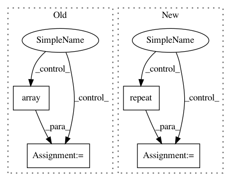

7fffa98b9166a03b4a53fb40202d97b09e8e9036,utils/datasets.py,ListDataset,__getitem__,#ListDataset#Any#,57
Before Change
while len(img.shape) != 3:
index += 1
img_path = self.img_files[index % len(self.img_files)].rstrip()
img = np.array(Image.open(img_path))
h, w, _ = img.shape
dim_diff = np.abs(h - w)
// Upper (left) and lower (right) padding
pad1, pad2 = dim_diff // 2, dim_diff - dim_diff // 2
After Change
// Black and white images
if len(img.shape) == 2:
img = np.repeat(img[:, :, np.newaxis], 3, axis=2)
h, w, _ = img.shape
dim_diff = np.abs(h - w)
// Upper (left) and lower (right) padding
In pattern: SUPERPATTERN
Frequency: 3
Non-data size: 4
Instances
Project Name: eriklindernoren/PyTorch-YOLOv3
Commit Name: 7fffa98b9166a03b4a53fb40202d97b09e8e9036
Time: 2018-05-29
Author: eriklindernoren@gmail.com
File Name: utils/datasets.py
Class Name: ListDataset
Method Name: __getitem__
Project Name: scikit-image/scikit-image
Commit Name: 5eef44e87fcb84e6848d2184241ba443dece3e17
Time: 2017-12-05
Author: contact@kne42.me
File Name: skimage/measure/_moments.py
Class Name:
Method Name: moments_coords_central
Project Name: calico/basenji
Commit Name: 35000f76437852e63287719d948723c322e2327e
Time: 2016-07-13
Author: davidkelley44@gmail.com
File Name: basenji/batcher.py
Class Name: Batcher
Method Name: next